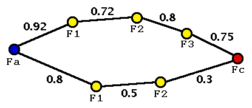

Transitive Relevance

Intuition
Relevance to a formula relevant to a formula ... to the conjecture
A chain is only as strong as its weakest link
or
A chain is only as strong as its first link
Longer chains are weaker
Definition
Examine (directed contextual) direct relevances on paths
Fa = F0 - F1 - ... - Fn = Fc
The "weakest link"
path relevance
between
Fa
and
Fc
is
min direct-relevance(Fi-1,Fi) i=1..n ---------------------------------- n
The
transitive relevance
between
Fa
and
Fc
is
max path-relevance(Fa,Fc)